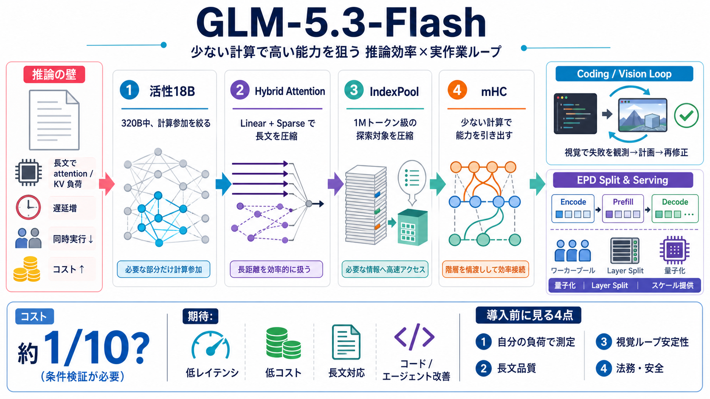

GLM-5.3-Flash: Frontier Intelligence, Flash Cost
Initial source page

Initial source page
GLM-5.3-Flash incorporates several architectural improvements over GLM-5. For the first time, we introduce a hybrid arch…
GLM-5.3-Flash is the first natively multimodal release in the GLM-5 family, built to handle text, image, and video in on…
@openrouter: GLM-5.3-Flash is built for efficient coding and long-horizon agent tasks. Its hybrid sparse and linear at…
# GLM 5.3 Flash Is INSANE — 320B MoE + Multimodal AI (= Ox Alpha) ## Codedigipt 14500 subscribers 19 likes ### Descript…
GLM-5.3 is “much better” at complex coding and long-horizon tasks, Z.ai said, boasting a 50pc improvement from the older…